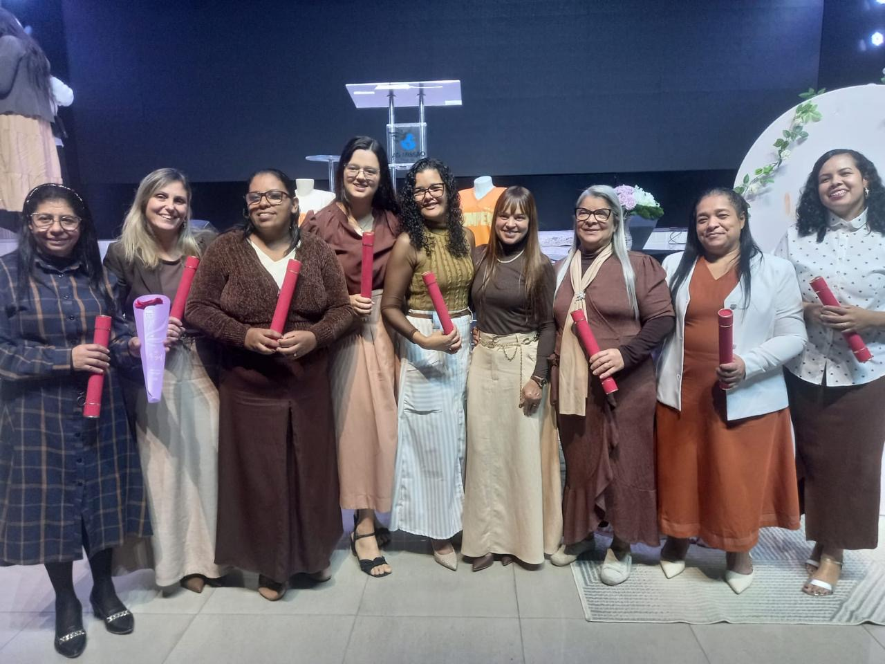
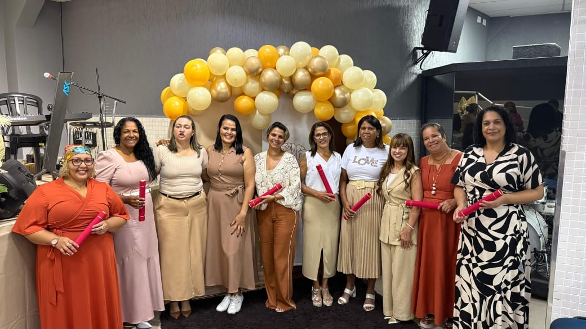
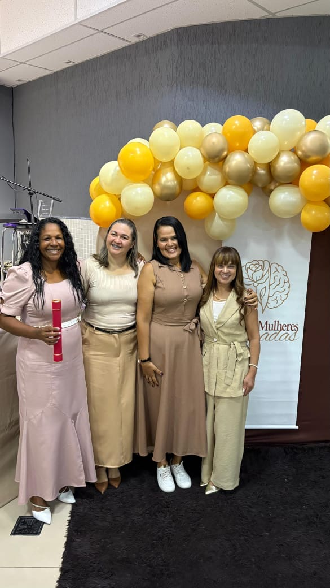
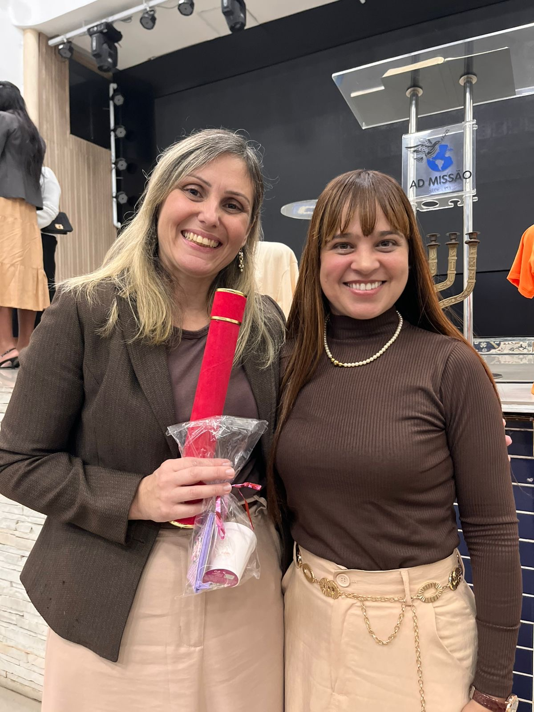

Caminho Para a Cura
O primeiro passo de uma jornada de restauração interior — para mulheres que decidiram que não vão atravessar a dor sozinhas.
Conhecer o livroUma jornada para restaurar feridas, vencer a ansiedade e descobrir uma nova identidade em Deus.
Aos quase 50 anos, descobri que a fé é o que carrega quando tudo o mais cede.
Enfrentei vales profundos. Vi minha vida ser virada do avesso por dores e provações que pareciam insuportáveis. E no meio dessas tempestades, encontrei o que ninguém pode tirar: o propósito que Deus tem para mim.
Hoje, escrevo livros e ensino mulheres que — como eu um dia — se perguntam se ainda há caminho. Há. E ele começa por dentro.
Uma jornada de 12 aulas que reúne ensinamentos bíblicos e princípios de inteligência emocional — para mulheres que querem restaurar suas emoções e fortalecer sua fé.
Reconheça os padrões emocionais que limitam sua caminhada e abra espaço para a cura.
Princípios bíblicos e inteligência emocional para encontrar paz no presente.
Descubra quem você é em Deus — sua história não termina onde a dor começou.
Cada formanda carrega uma travessia. São mulheres que escolheram não atravessar a dor sozinhas — e hoje carregam fé, propósito e uma nova identidade.


A cura não é a ausência da dor — é a presença de quem atravessa com você.Andrea

